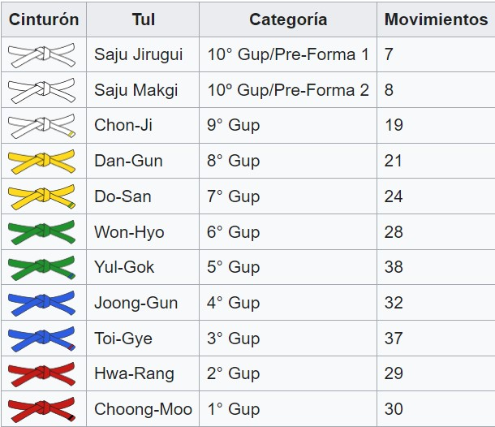

Es uno de los deportes de lucha más populares. Una de las principales razones
es la vistosidad de su práctica aportada por las técnicas de piernas y patadas, las cuales tienen un
enorme protagonismo y aportan rapidez a su desarrollo.
Las formas fueron diseñadas por el Gran Maestro Gral. Choi Hong Hi para el perfeccionamiento y
desarrollo técnico del Taekwon-Do. Estas constituyen una serie de movimientos fundamentales, las cuales
representan técnicas de ataque o defensa en una secuencia mezclada y lógica. Cada movimiento que
componen las formas tiene una explicación lógica en el Cómo y el Por qué de su desarrollo y aplicación.
El practicante combate sistemáticamente con varios oponentes imaginarios, realizando las técnicas que
componen cada una de estas formas. Las formas son 24 en representación de las 24 horas del día,
simbolizando la enternidad y encierran 970 movimientos. El nombre, la cantidad de movimientos y el
diagrama de cada forma en particular simbolizan mitos, héroes, hechos y el espíritu de la historia
coreana. Son un requisito básico para pasar el examen al siguiente nivel (Hasta el examen de 6° Dan a 7°
Dan; a partir de ahí, tomarán en cuenta otros aspectos, tales como la trayectoria dentro del Taekwondo,
años de práctica, acciones en pro de la difusión del mismo, etc.).
Las 24 formas se cuentan desde Cinturón Blanco punta Amarillo hasta Cinturón Negro(VI Dan). Saju-Jirugi
(golpe a los 4 lados) y Saju-Maki (bloqueo a los 4 lados) son consideradas pre-formas básicas para
aprender a caminar y bloquear.
